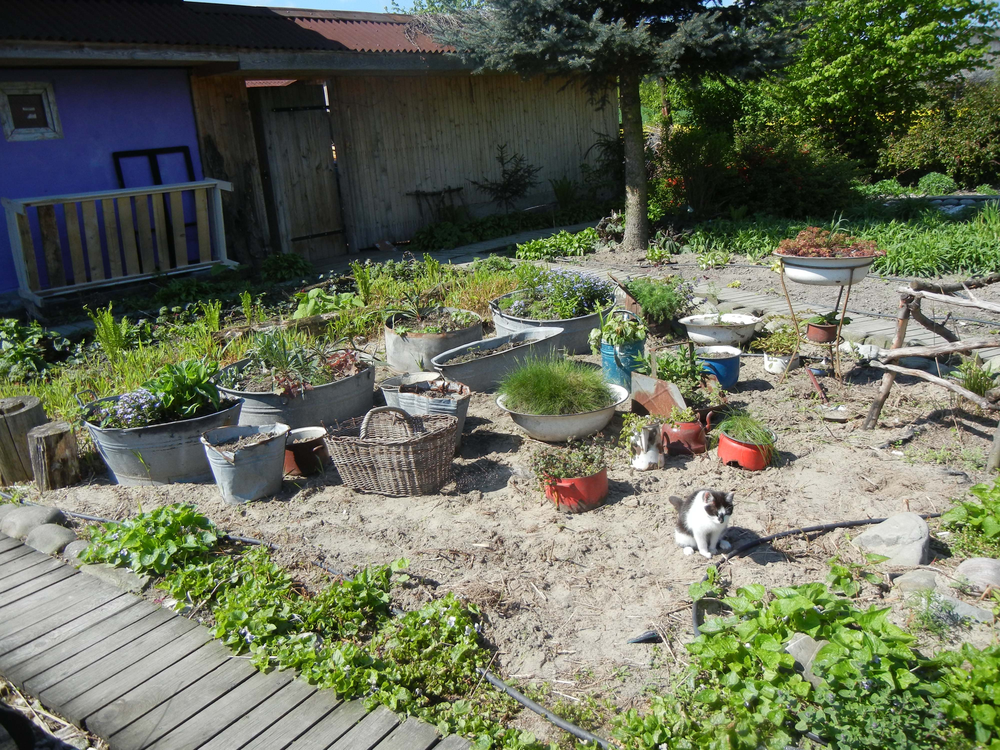
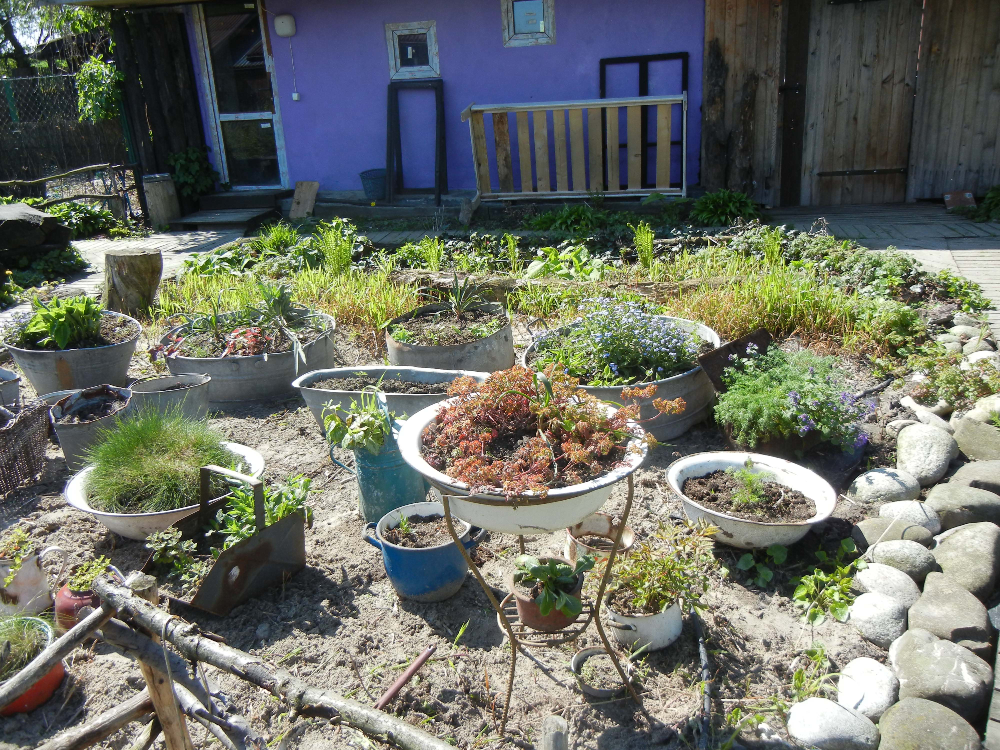
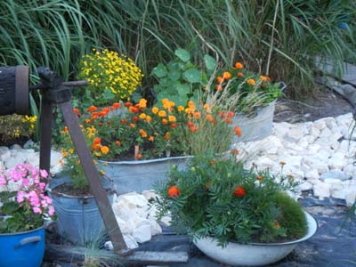

Postanowiłam
pozbyć się namolnych miskantów, ale nie było to zadanie łatwe. Mikołaj blisko tydzień rył ziemię i wyciągał rozłogi. Większość wrosła w starą agrowłókninę, więc trzeba było ją wyrzucić. Ale trawa nie odpuszczała. W końcu uzyskaliśmy w miarę czyste podłoże, wciąż jeszcze z piaskiem. Miałam nadzieję, że uda się zachować moją oryginalną Plażę. Kiedy jednak kolejne koty urządziły sobie tam kuwetę, poddałam się.
Plażę pokryliśmy
kamieniami, jakie na szczęście szybko zzieleniały. Białe nie pasują do tej ekologicznej rabaty. Ekologia polaga na tym, że wszystkie rośliny rosną w metalowych zardzewiałych pojemnikach znalezionych w lesie. Naczynia są dziurawe, znakomicie więc służą jako donice.
Jesienią obsadziliśmy pojemniki cebulami, wiosna będzie wiec radosna i kolorowa. Potem dołączą byliny i jednoroczne. Balie są monochromatyczne. Jestem ciekawa, co z tego wyniknie.



